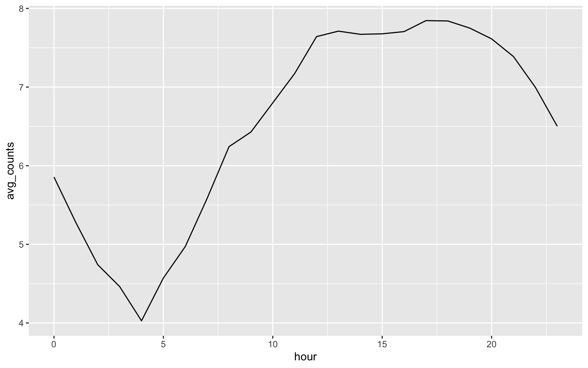
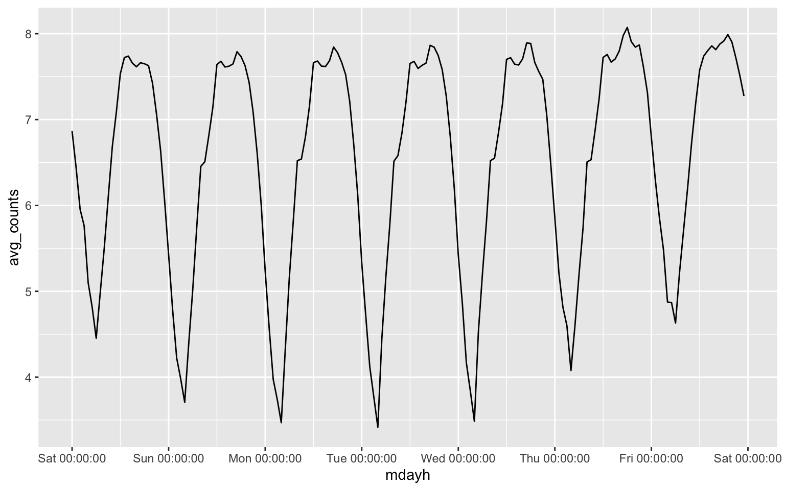
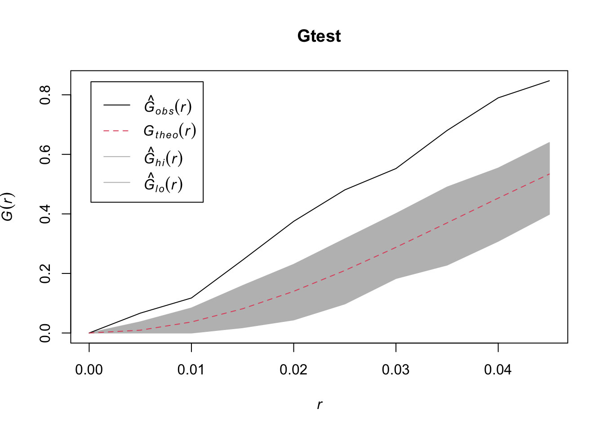

library(lubridate)
library(dplyr)
library(tidyr)
library(ggplot2)load("datasets/melb_sel.Rdata")
head(melb_sel)## # A tibble: 6 × 2
## date counts
## <dttm> <dbl>
## 1 2019-06-01 00:00:00 6.74
## 2 2019-06-01 01:00:00 6.33
## 3 2019-06-01 02:00:00 6.01
## 4 2019-06-01 03:00:00 5.28
## 5 2019-06-01 04:00:00 4.75
## 6 2019-06-01 05:00:00 4.49mel_d_avg = melb_sel |> mutate(wday = wday(date, label = TRUE), hour = hour(date)) |> group_by(hour) |>
summarise(avg_counts = mean(counts))
ggplot(mel_d_avg, aes(x = hour, y = avg_counts)) + geom_line()
melb_w_avg = melb_sel |> mutate(wday = wday(date, label = TRUE), hour = hour(date)) |>
group_by(wday, hour) |> summarise(avg_counts = mean(counts))
melb_w_avg$mdayh = melb_sel$date[1:168]
melb_w_avg |>
ggplot(aes(x = mdayh, y = avg_counts)) + geom_line() +
scale_x_datetime(date_labels = "%a %H:%M:%S", date_breaks = "1 day")
Question: What is the expected number of events?
Answer: \[\lambda \nu(D) = 100\times 4 = 400. \]
Question: What do you conclude from the above plot?
Answer: We fail to reject the null hypothesis since the estimated G function is inside the envelope.
Question: Can you test rNS data whether it follow clustered point pattern?
library(spatstat)## Loading required package: spatstat.data## Loading required package: spatstat.geom## spatstat.geom 3.2-9## Loading required package: spatstat.random## spatstat.random 3.2-3## Loading required package: spatstat.explore## Loading required package: nlme##
## Attaching package: 'nlme'## The following object is masked from 'package:dplyr':
##
## collapse## spatstat.explore 3.2-6## Loading required package: spatstat.model## Loading required package: rpart## spatstat.model 3.2-10## Loading required package: spatstat.linnet## spatstat.linnet 3.1-4##
## spatstat 3.0-7
## For an introduction to spatstat, type 'beginner'set.seed(2025)
nclust <- function(x0, y0, radius, n) {
return(runifdisc(n, radius, centre=c(x0, y0)))
}
rNS = rNeymanScott(kappa=10, expand=0.1,
rcluster = nclust, radius=0.1, n=10)
r=seq(0,1, by=0.005)
Gtest=envelope(rNS,fun=Gest, r=r, nrank=5, nsim=200)
plot(Gtest)
## Generating 200 simulations of CSR ...
## 1, 2, 3, 4.6.8.10.12.14.16.18.20.22.24.26.28.30.32.34
## .36.38.40.42.44.46.48.50.52.54.56.58.60.62.64.66.68.70.72.74
## .76.78.80.82.84.86.88.90.92.94.96.98.100.102.104.106.108.110.112.114
## .116.118.120.122.124.126.128.130.132.134.136.138.140.142.144.146.148.150.152.154
## .156.158.160.162.164.166.168.170.172.174.176.178.180.182.184.186.188.190.192.194
## .196.198.
## 200.
##
## Done.